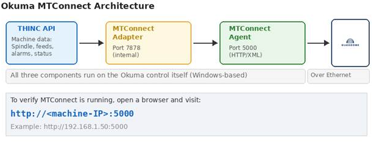
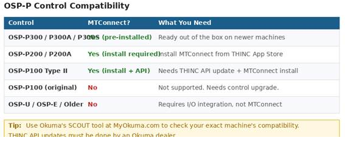
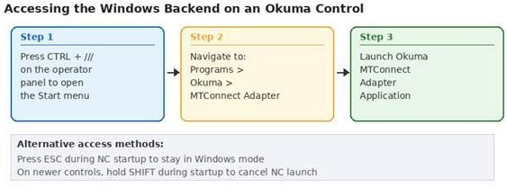
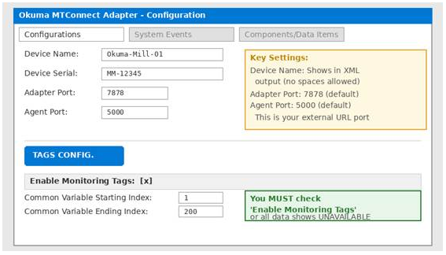
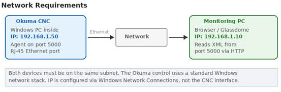
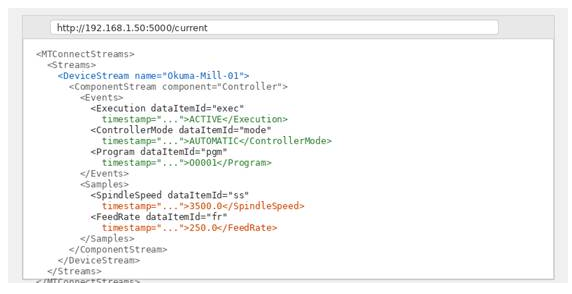
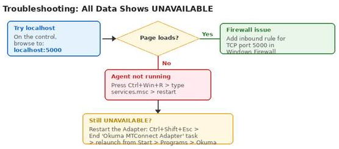

Okuma machines with OSP-P controls are MTConnect-ready out of the box. Unlike most other CNC brands, the Okuma control runs a full Windows operating system internally, which means the MTConnect Adapter and Agent both live on the machine itself. Setup is largely a software configuration task rather than a hardware one. This guide walks through verifying compatibility, configuring the adapter and monitoring tags, and confirming the XML data stream is accessible on your network.
Note: Okuma is the only major CNC manufacturer that builds the machine, control, drives, motors, encoders, and spindle in-house. Their open-architecture THINC platform is what makes native MTConnect support possible.
1. How MTConnect Works on Okuma
Before jumping into configuration, it helps to understand the three software components involved. All three run inside the Okuma control on its embedded Windows PC.

THINC API: This is Okuma's proprietary interface layer. It sits between the CNC system and any application that wants to read machine data. The MTConnect Adapter pulls data from the THINC API.
MTConnect Adapter: Reads machine data from the THINC API and converts it into the MTConnect format. It communicates with the Agent internally on port 7878.
MTConnect Agent: An HTTP server that makes the machine data available as an XML stream on port 5000. This is what your monitoring software connects to over the network.
The key takeaway is that monitoring software never talks directly to the CNC. It reads from the Agent via a standard HTTP request, which returns XML data that any MTConnect-compatible application can parse.
2. Check Your Control Compatibility
Not every Okuma control supports MTConnect. It is limited to the OSP-P family, and even within that family, some older models need updates before MTConnect will work.

How to Identify Your Control
The control model is displayed on the Okuma screen during startup (e.g., OSP-P300A). You can also find it in the system information screen under the SYSTEM menu on the control.
Checking Software Versions
Even on a compatible control, the THINC API version matters. MTConnect requires:
- Machining Centers: THINC API version 1.18.0.0 or later
- Lathes and Grinders: THINC API version 1.19.0.0 or later
- Latest adapter (v4.1.3): THINC API version 1.22.5.0 or later
Note: THINC API updates must be performed by an Okuma dealer. You cannot update the API yourself. Contact your dealer to check your current version and arrange an update if needed.
Okuma also provides a tool called SCOUT on MyOkuma.com that can check your exact machine's compatibility and tell you which adapter version to install.
3. Access the Windows Backend
Since the Okuma control runs Windows internally, all MTConnect configuration happens through the Windows interface rather than the CNC screen. You need to get to the Windows desktop to proceed.

Method 1: From the Running Control
Press CTRL + /// (the three-slash key on the Okuma operator panel) to bring up the Windows Start menu. From here you can access File Explorer, the Programs menu, and all standard Windows functions.
Method 2: During Startup
When the machine is powered on, the NC software launches automatically. To stay in Windows mode instead:
- Older controls (P100 II, P200): Press ESC during startup, then click Cancel on the NC HMI screen.
- Newer controls (P300, P300A): Hold the SHIFT key during startup to cancel the NC launch.
Note: You should be in Windows mode (NC not running) when installing or updating the MTConnect Adapter software. The NC and the installer cannot run at the same time.
4. Install or Verify the MTConnect Adapter
On newer P300 machines, the MTConnect Adapter and Agent are often pre-installed. On P200 and P100 Type II machines, you will likely need to install them yourself.
Check If It Is Already Installed
Look for the Okuma MTConnect icon in the Windows system tray (bottom-left corner of the screen). You may need to hold CTRL and press a button to show the taskbar, then click the left-facing arrows to expand hidden icons. If you see the Okuma icon, the adapter is installed and running.
Installing the Adapter
If the adapter is not installed:
- Download the MTConnect Adapter from the THINC App Store at MyOkuma.com (you will need an account)
- Copy the installer to a USB drive
- On the Okuma control, enter Windows mode (NC not running)
- Open File Explorer (CTRL + ///), navigate to the USB drive, and run Setup.exe
- The installer checks for .NET Framework 4.0 and THINC Startup Service. Follow prompts to install any missing prerequisites.
- During setup, enter a Device Name (no spaces) and Device Serial Number
- Complete the installation and restart the machine
Note: The installer will reject the setup if the THINC API version on the machine is too old. If this happens, you need to contact your Okuma dealer to update the THINC API first.
Automatic Startup
The installer registers the MTConnect Adapter with the THINC Startup Service so it launches automatically after the NC system boots. If for some reason it does not start automatically, you can configure it manually:
- Go to Start > Programs > Okuma > THINC Startup Service > THINC Start Settings
- Click Add, browse to OkumaMTConnectAdapter.exe (default location:
D:\Program Files\Okuma\Okuma MT Connect Adapter\) - Check Enabled, Launch, and Wait
- Click Save and restart the machine
5. Configure the Adapter and Tags
Once the adapter is running, you need to configure two things: the connection settings and the monitoring tags. The monitoring tags step is the one most people miss, and it is the most common reason for data showing as UNAVAILABLE.
Open the Configuration Window
- Double-click the Okuma MTConnect icon in the system tray
- You may be prompted for a username and password (the defaults are set during installation)
- Click the Configurations tab at the top

Connection Settings
Verify the following settings on the Configurations screen:
| Setting | Default | Notes |
|---|---|---|
| Device Name | (set during install) | Appears in the XML output. No spaces allowed. |
| Adapter Port | 7878 | Internal communication between adapter and agent. Leave as default. |
| Agent Port | 5000 | External HTTP port. This is what monitoring software connects to. |
Enable Monitoring Tags
This is the critical step. Click the Tags Configuration button (or TAGS CONFIG soft key) at the bottom of the configuration screen.
- Check the Enable Monitoring Tags box at the top of the screen
- In the Monitoring Tags table, check the tags you want to monitor
- Set the Common Variable Starting/Ending Index range to cover any program variables you want to read (default 1 to 200)
- Click SAVE & CLOSE
- Click MINIMIZE TO SYSTEM TRAY to close the configuration window

Note: If you just installed the adapter and no other applications are using it yet, it is safe to press UNCHECK ALL first, then enable only the tags listed above. You can always add more later.
6. Network Configuration
The Okuma control has a standard Windows network stack. The IP address is configured through Windows Network Connections, not through the CNC interface.

Setting the IP Address
- Press CTRL + /// to access the Windows Start menu
- Go to Settings > Control Panel > Network Connections (or Network and Sharing Center on newer machines)
- Right-click your Local Area Connection and select Properties
- Select Internet Protocol (TCP/IP) or Internet Protocol Version 4 and click Properties
- Set a static IP address, subnet mask, and default gateway that matches your shop floor network
- Click OK and close all dialogs
Note: Coordinate with your IT department for an available IP address. The Okuma control and your monitoring PC must be on the same subnet to communicate.
Firewall Considerations
The MTConnect Agent serves data on port 5000 via HTTP. If the Windows Firewall is active on the control (common on newer machines running Windows 7 or 10), you may need to add an inbound rule:
- Open Windows Firewall from the Control Panel
- Click Advanced Settings > Inbound Rules > New Rule
- Select Port, click Next
- Enter 5000 for the specific local port, click Next
- Select Allow the Connection, apply to all profiles, and give it a name like "MTConnect Agent"
7. Verify the MTConnect Stream
Once the adapter is configured and the network is set up, verify that the XML data stream is accessible.
From the Okuma Control Itself
Open a web browser on the control (Internet Explorer is typically available) and navigate to:
http://localhost:5000/currentIf the page loads and shows XML data with actual values (not UNAVAILABLE), the adapter and agent are working correctly.
From a PC on the Network
On a PC connected to the same network, open a browser and navigate to:
http://192.168.1.50:5000/currentReplace the IP with your Okuma control's actual address. You should see an XML response.

What to Look For
- Execution: Should show ACTIVE when a program is running, IDLE when stopped
- ControllerMode: Should show AUTOMATIC, MANUAL, or MDI depending on the current mode
- SpindleSpeed / FeedRate: Should show numeric values when the machine is cutting
- Program: Should show the name or number of the active program
If all values show UNAVAILABLE, the agent is running but the adapter is not feeding data. See the troubleshooting section below.
8. Troubleshooting

| Problem | Cause | Fix |
|---|---|---|
| Cannot access http://<IP>:5000 from network | Firewall blocking port 5000 | Add inbound firewall rule for TCP port 5000 |
| Page loads but all data is UNAVAILABLE | Adapter not sending data to agent | Restart the adapter: End Task in Task Manager, relaunch from Start > Programs > Okuma |
| Monitoring Tags not checked | Tags were never enabled after installation | Open adapter config > Tags Configuration > check Enable Monitoring Tags |
| localhost:5000 does not load | Agent service not running | Press Ctrl+Win+R > services.msc > find MTConnect Agent > Restart |
| Adapter crashes on startup | THINC API version too old | Contact Okuma dealer to update THINC API |
| Adapter says THINC API not ready | NC has not fully started yet | Wait for the THINC API icon to appear in system tray, then restart adapter |
| Some tags show data, others UNAVAILABLE | Those tags not enabled, or feature not on this machine | Check tag configuration; some tags require specific NC options (e.g., Work Counter) |
| Adapter installed but icon not in system tray | Not registered with Startup Service | Go to THINC Start Settings and add OkumaMTConnectAdapter.exe |
9. Connect to Your Monitoring System
Once your Okuma machine is serving MTConnect data on port 5000, connecting it to a production monitoring system or SCADA is straightforward. The platform reads the MTConnect XML stream directly and automatically maps the data items to your production dashboards.
The data available through MTConnect on Okuma includes execution state, spindle speed, feed rate, spindle load, active program, alarms, part counts, and common variables. This provides real-time visibility into machine utilization, cycle times, downtime reasons, and production counts without any additional hardware or sensors.
10. Quick Reference
| Item | Value |
|---|---|
| Supported Controls | OSP-P100 Type II, P200, P200A, P300, P300A, P300S |
| MTConnect Agent Port | 5000 (HTTP) |
| MTConnect Adapter Port | 7878 (internal) |
| URL Format | http://<machine-IP>:5000/current |
| Access Windows | CTRL + /// on operator panel |
| Adapter Location | D:\Program Files\Okuma\Okuma MT Connect Adapter\ |
| Restart Agent | services.msc > MTConnect Agent > Restart |
| Default Install Source | THINC App Store at MyOkuma.com |
| Required: THINC API (Mills) | 1.18.0.0 or later |
| Required: THINC API (Lathes) | 1.19.0.0 or later |
Conclusion
Configuring MTConnect on an Okuma OSP-P control comes down to three things: making sure the adapter is installed, enabling the monitoring tags, and confirming port 5000 is accessible on your network. The architecture is simpler than most CNC brands because everything runs on the Windows PC inside the control. There is no external hardware to install and no special CNC-side configuration needed beyond the adapter software itself.
The most common issue by far is forgetting to enable the monitoring tags after installation. If you see UNAVAILABLE for all data items, that is almost always the reason. Open the adapter configuration, check the Enable Monitoring Tags box, select the tags you need, save, and the data should start flowing immediately.